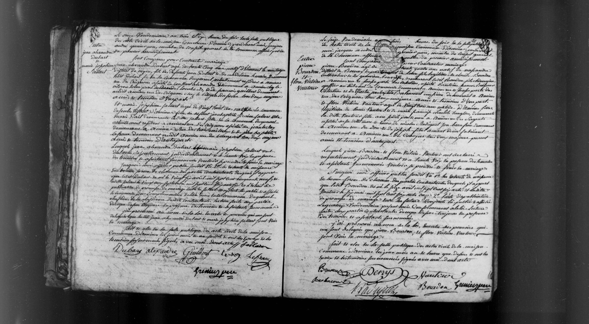

Acte d'état civil
Amiens (1er arrondissement), mariage de Jean Alexandre Dubart et Marie Josephine Sallart, 11 vendémiaire an III
Ce document établit
- Jean Alexandre Dubart et Marie Josephine Sallart se marient à Amiens (1er arrondissement) le 11 vendémiaire an III (02/10/1794) vérifié A0199
« « Le onze vendémiaire an trois […] sont unis en mariage » »
- Jean Alexandre Dubart est fils de défunt Jean Dubart et de Madelaine Lemaire vérifié A0200
« « fils de défunt Jean Dubart et de Madelaine Lemaire » »
- Jean Alexandre Dubart est né le 26/04/1759 à Élincourt (« Elincourt la Montagne », district de Noyon), selon l'extrait de naissance produit au mariage partiellement vérifié A0201
« « natif d'Elincourt la Montagne, district de Noyon […] ledit Dubart est né le vingt six avril mil sept cent cinquante neuf » »
- Marie Josephine Sallart est fille de défunt Jean Baptiste Firmin Sallart et de Marie Dail vérifié A0202
« « fille de défunt Jean Baptiste Firmin Sallart et de Marie Dail » »
- Marie Josephine Sallart est née le 22/09/1766 à Senlis (district d'Amiens), selon l'extrait de naissance produit au mariage partiellement vérifié A0203
« « native de la commune de Senlis, district d'Amiens […] ladite Sallart le vingt deux septembre mil sept cent soixante six » »
- En octobre 1794, les deux futurs époux demeurent au Quesnel et résident « actuellement » à Amiens, rue des Crignons [?] ; les bans ont été publiés au Quesnel le 5e jour complémentaire de l'an II (21/09/1794) ; aucune profession n'est indiquée vérifié A0204
« « demeurant ledit Dubart fils en la commune du Quesnel, actuellement résidant à Amiens rue des Crignons » »
- Témoins du mariage, tous domiciliés à Amiens et qualifiés d'amis : Constant Alexandre (chez le citoyen Leleu père), François Guilbert, Jean Le Roy (rue des Trois Cailloux), Jean Baptiste Lefranc ; officier : Jacques André Grenier père vérifié A0205
« « tous deux majeurs, amis et témoins » »
- Au mariage de 1794, le témoin François Guilbert demeure à Amiens rue des Crignons « chez le citoyen Dufresne » (lecture probable) partiellement vérifié A0210
« « rue des Crignons chez le citoyen Dufresne » »
- Hypothèse : en septembre-octobre 1794, Jean Alexandre et Josephine résident rue des Crignons à Amiens parce qu'ils servent la famille Dufresne (famille de Mme Le Fort) ou les Le Fort détenus, dans la maison Dufresne où Charles Dufresne est assigné depuis juin non résolu A0211
- La date de naissance de Jean Alexandre (26/04/1759 pour le baptême) concorde avec celle donnée par l'extrait de naissance produit à son mariage d'Amiens (an III). vérifié A0276
- Les parents de Jean Alexandre, Jean Dubart et Magdeleine Lemaire, sont nommés de la même façon dans l'acte de baptême de 1759 et dans le mariage d'Amiens de l'an III (« défunt Jean Dubart et Madelaine Lemaire »). vérifié A0277
- La naissance et la filiation de Marie Josephine (22/09/1766, fille de Jean Baptiste Firmin Sallart et de Marie Dail) concordent avec l'extrait de naissance produit au mariage d'Amiens (11 vendémiaire an III). vérifié A0282
Personnes concernées
transcription T7 ; folio 5 v°